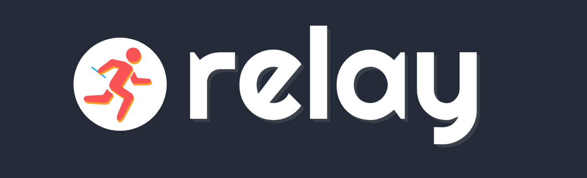
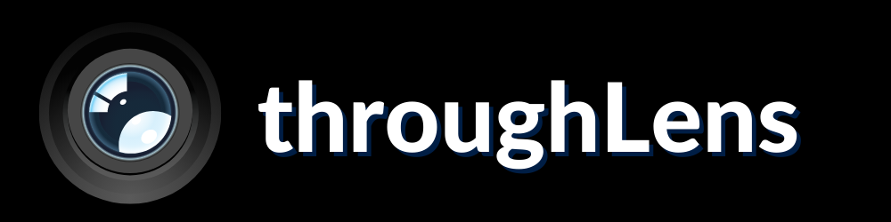
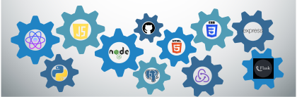

Intro
Learning a language opens a portal to the culture of a country and how the people of that country view the world. Speaking Spanish, English and a bit of French allowed me to see that; my passion for languages led me to computer languages like Python and JavaScript which allowed me to learn about the intricacies of the backend of a website. Also, create the user interfaces that the user uses.
Projects

l'École Solo Project | React | Flask | Python | PostgreSQL | May 2021
l'École is a skeumorph of a notebook which gives the user the tangibiliy of a notebook with a clean user interface without actually using a notebook and pencil. In order to create the skeumorph I used CSS properties such as rotateZ, rotateX, rotateY, and perspective to enrich the UI.

Relay Group Project | React | Flask | Python | PostgreSQL | May 2021
relay is a clone of the app Asana which is an organizational app that allows the users to create projects, assign a team to a project, and/or assign task to a team member; this helps user keep track of their project(s).

throughLens Solo Project | React | Express | JS | PostgreSQL | April 2021
throughLens is based of the app Flickr where a user can upload their photos an keep them private in their camera roll or set them as public, to share with other users and let them comment on the photos.
showMe Group Project | Express | Pug | JS | PostgreSQL | March 2021
showMe is a spin off of the app GoodReads that it for TV shows where users can see a description, a trailer, and the average rating of a particular show and also add them to a shelf to watch later or have watched them.
Technologies

Within the last year I have been honing my skills with Python and JavaScript; I have incorporated the following technologies in the projects I created.
About
I am a person that likes to create things with my hands. That is the passion and work that I put into the four projects I've worked within the last year.
Within each project I've encountered different bugs, but when I worked with a team we would worked together to solve the issue. If I was working along I would figure out were the problem was coming
from and then I would put a console.log() to see what the variable or function was doing. That helped solve most of the issues I encountered. However, my favorite part was building the front-end
because I had to select how each component would be displayed and also the color scheme that would reflect the idea of the app that I was trying to create.